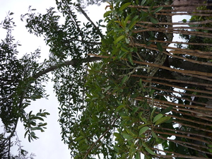

balitì 
/balitiʔ/
n.
“strangler_fig_tree”
1.
n.
Ficus_sp.
a large, high type of a tree which usually dwelling place of anykind birds (strangler fig)
Wrd.Gloss: strangler_fig
Cult. These start as epiphytes and strangle their host, assuming tree form. There are at least five known species: 1. F. benjamina: straggling, smooth tree with drooping branches, planted as graceful shade tree, the bast of which is source for rope material. 2. F. indica: (Tag) baliting-baging, baliting-ibon, (Ceb) nunúk, erect smooth tree, the bark of which is used by Negritos and Mangyans in their g-strings. 3. F. payapa, (Ilk) puspus, basakla, the powdered roots are used as vulnerary when applied to wounds. 4. F. retusa: (Tag) marabutan, large with slender roots, smooth brown bark and male and female flowers, leaves and bark applied as poultice for rheumatism. 5. F. stipulosa: (Ilk) sanglaw, deciduous, 10 m. high, the fresh roots are used as poultice on wounds. They are much feared as being haunts of various supernatural beings like (Tag) tianak. The panuvaran, prayer house is built under such a tree for offering sacrifice to appease the spirits.
Eng. strangler fig; fig, strangler
Tag. balíti
Ceb. dalakit; baléte
Ilo.: balíti
OCM: Flora (137)
DDP: Tree (1.5.1)
Online dict status: -
Usage level: R
2.
n.
a tree in traditional Matigsalug belief
Cult. This tree is the one passed by the soul before it reaches the Meibulan place (the place for souls)
Eng. baliti tree; tree variety
OCM: Flora (137)
DDP: Tree (1.5.1)
Online dict status: -
Usage level: R
3.
n.
(tahabalitì, taha-) evil spirits (busew) that dwell in balitì trees
Kenè kew kekelag ke maapun e su egmanleug-leug e degma ka tahabalitì.
Don't play late in the afternoon because it is time of evil spirits to wander around.
Eng. evil spirit; spirit variety; demon
OCM: Animism (774), Spirits and Gods (776)
DDP: Dead things (1.4.1), Soul, spirit (3.1)
Online dict status: -
Usage level: M
Updated by: RJH,JLM,RJH,TME,RJH,QDL,RJH
Last updated: 22/Dec/2011
This page last updated: 19/May/2012
Copyright © 2009-2010, Matigsalug Language Christian Association, Inc